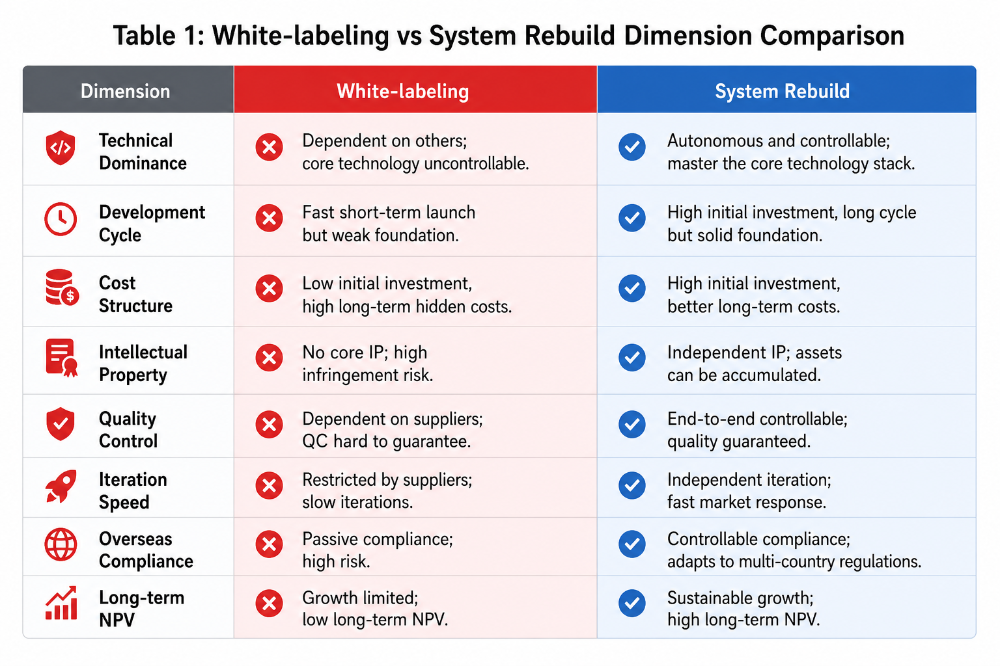
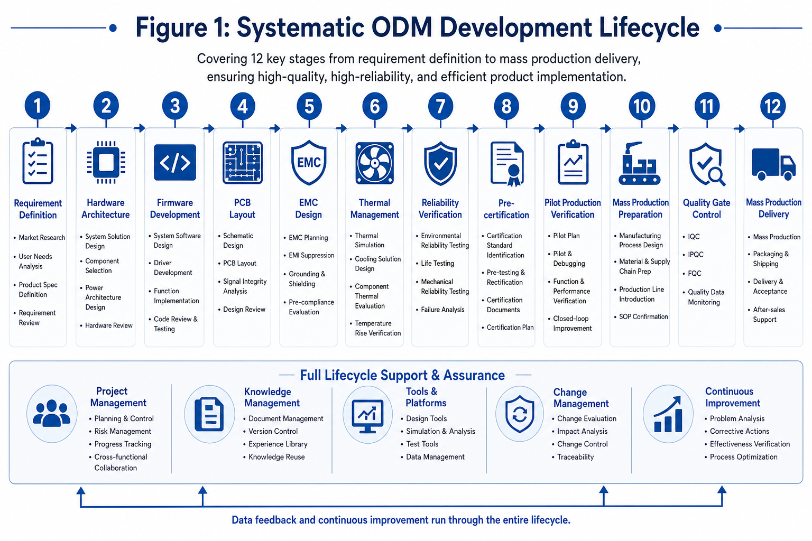
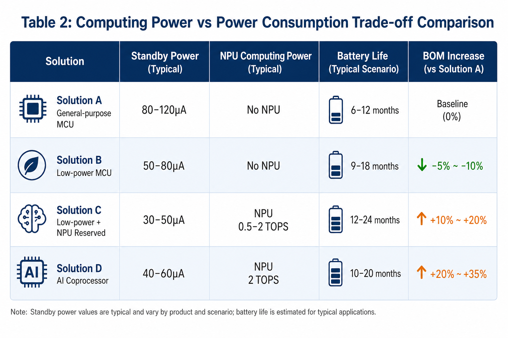
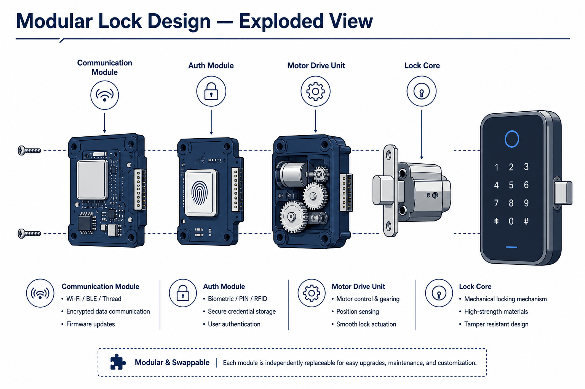
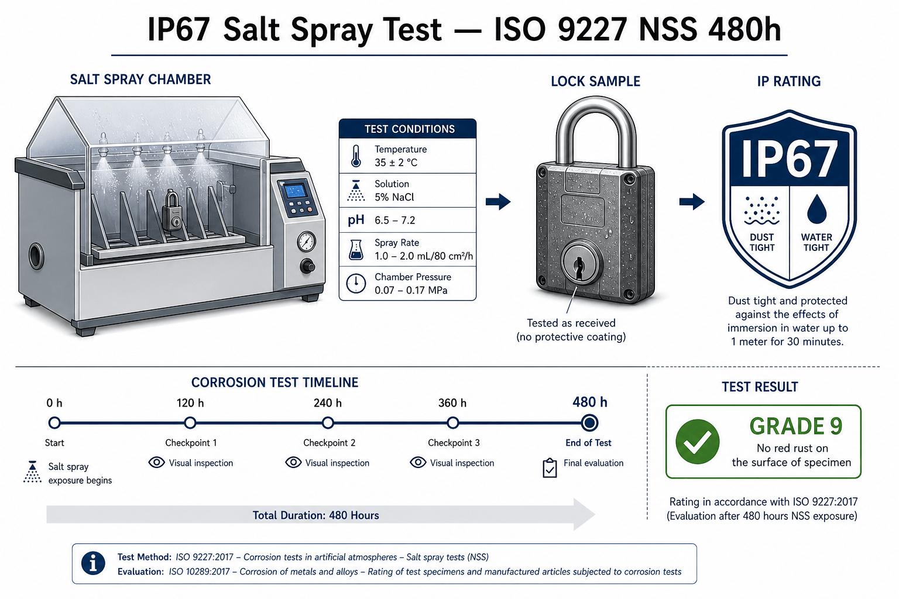
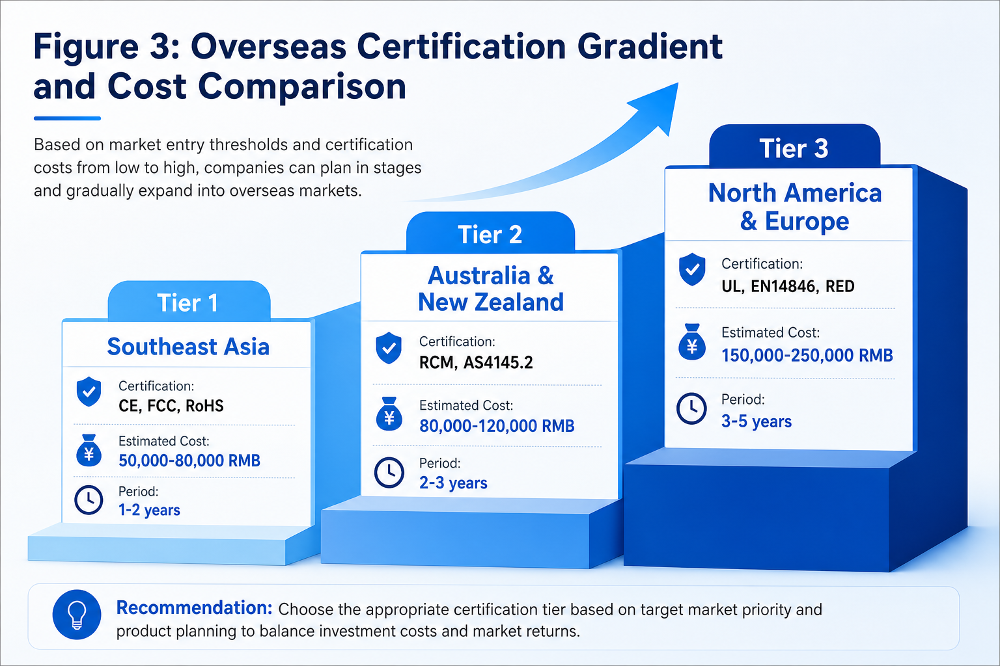
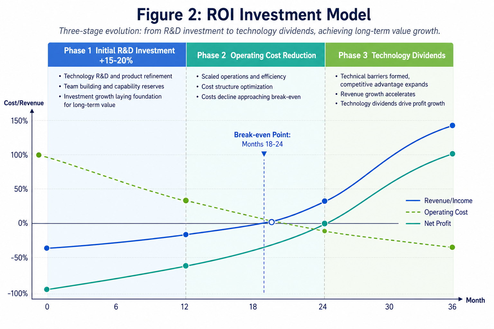

Redigido pela Equipa de engenharia B2B WAFU para proprietários de marcas, equipas de aprovisionamento OEM/ODM e integradores de sistemas. A WAFU Smart Lock, fundada em 2013, concentra-se em soluções de fechaduras inteligentes B2B, é certificada ISO 9001:2015 e entrega em conformidade CE/FCC/RoHS. Em caso de republicação, cite a fonte.
Síntese
O setor das fechaduras inteligentes está sob pressão de transformação estrutural (segundo o 2024 China Smart Lock Industry White Paper). A quota de faturação ODM do lado das marcas passou de 35 % (2019) para 65 % (2024), enquanto a margem bruta média caiu de 22 % para 13,8 % — a clássica armadilha « volume a subir, lucro a descer ». Este fosso revela o defeito central dos modelos white-label cosméticos: as marcas externalizam a definição do produto, a arquitetura técnica e a validação de fiabilidade, erodem a sua competência core e são empurradas para guerras de preço commoditizadas.
A soberania técnica significa o controlo independente de uma marca sobre a arquitetura do produto, os algoritmos-chave e os ativos de dados. Este artigo propõe uma reconstrução de engenharia de sistema: as parcerias ODM devem passar de transações a uma colaboração simbiótica. O caminho assenta em três pilares: laboratórios conjuntos liderados pela marca para um co-desenvolvimento end-to-end de requisitos, arquitetura de hardware e firmware; um design certification-first que incorpora cedo a conformidade do mercado-alvo e evita 30–50 % de custos de retrabalho em fase avançada; e ciclos fechados orientados por dados via partilha anonimizada para iteração contínua. Não é só uma otimização técnica — é a viragem estratégica da guerra de preços para a concorrência tecnológica, e da dependência produtiva para a autonomia técnica.
A modelação quantificada mostra: um ODM sistemático aumenta as despesas de I&D precoces em 15–20 %, mas reduz o custo do ciclo de vida em 25–30 %. As taxas de falha podem passar da média setorial (~3 %) para menos de 0,5 % — com uma diferenciação mais nítida. Ganhos concretos: tempo de desbloqueio de 1,5–2,5 s do mass market para ≤1 s, corrente de standby de 80–120 μA para 30–50 μA, autonomia da bateria de ~6 meses para ~18 meses. Os designs orientados para o futuro reservam interfaces de cálculo IA e matrizes de sensores para uma janela de upgrade de 3–5 anos.
O modelo ROI coloca o break-even no mês 18–24; depois forma-se um dividendo tecnológico duradouro. Para marcas médio-grandes a ~500.000 unidades/ano, o uplift NPV a três anos pode atingir 40–60 % (mesma base de volume). A expansão global segue um gradiente: Fase 1 (1–2 anos) Sudeste Asiático, custos de certificação RMB 50–80k; Fase 2 (2–3 anos) Austrália/Nova Zelândia, RMB 80–120k; Fase 3 (3–5 anos) América do Norte & Europa, RMB 150–250k. O quadro oferece um percurso completo da estratégia à execução, para sair da armadilha das baixas margens e construir uma vantagem duradoura.
Introdução: reconstrução de sistema contra dependência ODM
As fechaduras inteligentes conheceram um crescimento explosivo em cinco anos (investigação setorial: mercado global de 12 mil milhões USD em 2019 para 28 mil milhões USD em 2024, CAGR 18,5 %). A China destacou-se — mais de 45 milhões de unidades em 2024, ~42 % de quota global. Sob o crescimento aninha-se uma crise estrutural: nas marcas líderes, a quota de compras ODM passou de 35 % (2019) para 65 % (2024), enquanto a margem bruta descia de 22 % para 13,8 %. O mesmo fosso « volume alto, lucro baixo » explica porque as plataformas white-label one-size-fits-all falham de um tipo de porta para outro.
O dilema estratégico é claro. As marcas precisam da eficiência produtiva e das vantagens de custo dos parceiros ODM, mas temem a erosão técnica. O white-label cosmético externaliza por completo definição, design de hardware e firmware — as marcas tornam-se apêndices de canal e marketing. Os ODM regulam plataformas standard e lutam para se diferenciar; as marcas travam guerras de preço. Em 2024, os descontos médios atingiram ~12 %, enquanto o volume crescia apenas ~8 % — as margens foram esmagadas.

Mais em profundidade situa-se a perda de capacidade sistémica. Sob white-label, as marcas não controlam a stack subjacente — emergem três riscos: a iteração está ligada ao roadmap ODM; a fiabilidade depende dos relatórios de teste ODM sem um sistema QC independente; a propriedade intelectual é confusa e o know-how desaparece no fim da parceria. Os inquéritos mostram: 78 % das marcas citam uma pesada « caixa negra técnica », 62 % admitem não conseguir fazer root-cause das falhas em campo. A reconstrução de sistema é a saída: elevar o ODM da só produção a um co-desenvolvimento profundo em requisitos, arquitetura de hardware, firmware e validação de fiabilidade.
As marcas devem retomar a liderança técnica e construir uma cadeia completa dos cenários de utilizador à entrega de engenharia. O valor não reside só na competitividade do produto — mas num fosso tecnológico duradouro. A análise quantificada mostra: as marcas que lideram reconstruções de sistema podem elevar a diferenciação ~40 %, a satisfação do cliente ~25 % e baixar os custos pós-venda ~35 %.
Este quadro tem quatro dimensões. Primeiro: sistematizar os requisitos — traduzir necessidades de mercado difusas em parâmetros de engenharia mensuráveis (adaptação de instalação, objetivos de desempenho, reservas futuras). Segundo: dual-drive layout PCB e arquitetura de firmware para co-otimização hardware–software (CEM, térmica, firmware modular em quatro camadas). Terceiro: quantificar a fiabilidade com KPI orientados por dados (duração mecânica, robustez ambiental, estabilidade RF). Quarto: reconstruir a colaboração marca–ODM da negociação transacional a uma evolução simbiótica — via laboratórios conjuntos e dados partilhados. Objetivo: deixar a armadilha das baixas margens e construir uma vantagem de longo prazo.

A urgência vem da mudança de mercado. Os utilizadores esperam fechaduras não só « utilizáveis » mas « excelentes » — desbloqueio mais rápido, autonomia mais longa, segurança reforçada. A expansão overseas encontra barreiras de certificação rigorosas e exige conformidade by design. IA, IoT e edge computing elevam ainda mais a fasquia da upgradabilidade. O white-label cosmético não sustenta estes desafios; a reconstrução de sistema é o percurso de upgrade industrial. Nas secções seguintes detalhamos as vias de implementação, os pontos técnicos e o valor comercial.
Parte 1: Pensamento sistémico para requisitos & arquitetura de hardware
1.1 Parametrizar o ambiente de instalação
O ODM tradicional reduz muitas vezes a adaptação de instalação a um « design universal » (uma plataforma standard para cada tipo de porta) e gera problemas de compatibilidade em campo. O pensamento sistémico converte os parâmetros ambientais em constrangimentos de engenharia mensuráveis. Portas maciças em madeira: espessura 35–55 mm, densidade 0,6–0,8 g/cm³, tolerância de furação ±0,5 mm. Portas vidradas: espessura do vidro temperado 8–12 mm, tensão de bordo, fixação sem caixilho. Portas corta-fogo: dilatação térmica dos materiais ignífugos e redundância mecânica para emergências. O design parametrizado eleva a taxa de sucesso de adaptação de ~75 % para ~95 % e reduz os problemas pós-venda ligados à instalação ~60 %.
Os cenários emergentes são mais duros. As portas em madeira empenadas em edifícios antigos mostram frequentemente um desvio do caixilho (±3°), folgas irregulares (2–8 mm) e inchamento/retração da madeira (±2 %) — são precisos adaptação adaptativa e design de tolerância: placas de guia reguláveis (±5 mm), juntas elásticas (compressão 30–50 %) e sensores de pressão dinâmicos para o stress de instalação. As portas hollow-metal norte-americanas (aço 16–20 Gauge com espuma PUR) exigem um peso da fechadura ≤1,2 kg mais constrangimentos CEM e de ponte térmica. Uma redução de peso ~25 % vem da substituição de materiais (alumínio em vez de liga de zinco) e da otimização topológica.
A exportação exige um design modular. A EN 14846 exige ≥15 min de resistência à furação e ≥3000 N·m de momento de alavanca; a AS 4145.2 exige 30 minutos de resistência ao fogo para fechaduras corta-fogo; os deploys no Médio Oriente encontram 45°C e pó. Uma plataforma modular mantém os módulos core (esquema MCU, lógica de acionamento do motor) comuns, enquanto os módulos periféricos (corpo da fechadura, junta) são localizados — baixando os custos de adaptação regional ~40 % e o tempo de ciclo ~50 %.
1.2 Objetivos de desempenho quantificados & benchmarks setoriais
A velocidade de desbloqueio é uma métrica UX core. O mass market situa-se em 1,5–2,5 s; ≤1 s é um diferenciador claro. Percursos: resposta do motor de 50 ms para 20 ms com BLDC de alta densidade de binário (≥0,15 N·m); percursos de ferrolho mais retos para reduzir perdas mecânicas; pré-carga preditiva para que a autenticação comece à aproximação do utilizador; sensores Hall <10 ms; relação de engrenagem de 20:1 para 15:1; guias lineares em vez de deslizantes. O custo de matéria sobe 8–12 %, mas o premium de preço pode atingir 15–25 % — payback sob 6 meses.
A corrente de standby guia a autonomia da bateria. Média setorial 80–120 μA; os líderes atingem 30–50 μA via MCU de baixo consumo (ex. STM32L5) em vez de MCU generalistas, DVFS em vez de pontos de funcionamento fixos, e wake event-driven em vez de polling. Medidas: corrente sleep MCU <2 μA, peripheral power gating, arquitetura event-driven. Um design a 30 μA pode prolongar a vida de 4×AA de ~6 para ~18 meses e baixar os custos de manutenção em 40 %+. A autonomia da bateria está em 2.º lugar entre os fatores de compra na investigação de utilizadores (~28 % de peso).

O rádio multimodo exige equilíbrio. Bluetooth 5.2 oferece links de baixo consumo (≤10 mA), Wi-Fi 6 permite o controlo remoto, NFC suporta cartões e phone-tap. Desafios de coexistência: isolamento de antenas ≥20 dB, orçamentos Flash apertados (256 KB frequentemente insuficientes) e scheduling de alimentação para que os blocos RF não estejam todos ativos. Abordagem prática master–slave: Bluetooth always-on primário, Wi-Fi on-demand, NFC de reserva. Técnicas: antenas tri-banda (2,4/5/13,56 GHz), buffers partilhados, scheduling baseado no uso. O tri-mode acrescenta 15–20 % de custo vs single-mode, mas pode elevar a stickiness ~35 %.
1.3 Forward Design: business case & headroom
As interfaces de cálculo IA são um investimento orientado para o futuro. A IA das fechaduras hoje é sobretudo auth facial/voz; amanhã podem seguir analytics comportamentais, deteção de anomalias e ligações de cena. O headroom NPU exige ~40×40 mm de superfície PCB para co-processadores 0,5–2 TOPS; extensão de memória via SPI Flash mais DDR3 256 MB opcional; rails de alimentação dimensionados para picos +1,5–2 W. Pads compatíveis com vários packages NPU (BGA196/225), serial de alta velocidade (PCIe 2.0 ou MIPI CSI-2) e rails de 500 mA a 1 A mantêm abertos os percursos de upgrade. O BOM sobe 3–5 %, mas preserva uma janela de upgrade de três anos — importante se a penetração das fechaduras IA atingir ~35 % até 2027.

A redundância da matriz de sensores sustenta a sensorística futura: base acelerómetro 3 eixos (deteção de alavanca), luz ambiente (retroiluminação auto), temperatura (sobreaquecimento). A expansão pode incluir presença mmWave, telemetria ultrassónica e deteção de gás. Princípios: pontos de teste em nets críticas, margem rail 20 %, I/O de reserva 30 %; conectores com 12 GPIO / 2 I2C / 1 SPI; ADC de 8 para 16 canais; alimentação de sensores 3,3 V/100 mA. Um custo precoce +2–3 % pode baixar os custos de upgrade posteriores ~60 % e prolongar a vida útil em 2–3 anos.
O planeamento de crescimento do firmware deve aderir à vida útil do produto. Firmware hoje frequentemente 512 KB–1 MB, pode crescer para 4–8 MB. Preferir NOR 128 Mb ou NAND 1 Gb com OTA diferencial e bootloader protegido. Em 8 anos: 15–20 upgrades maiores de 0,5–2 MB implicam uma necessidade total de 16–40 MB. XIP NOR, update dual-bank sem downtime e secure rollback contam. Flash 128 Mb vs 64 Mb pode custar +25 %, mas evita swaps de hardware a meio da vida e pode poupar ~15 % no total.
Parte 2: Dual drive — layout PCB & arquitetura de firmware
2.1 Pontos-chave do design PCB
O layout CEM segue três regras: isolamento de antenas ≥λ/4 (≈31 mm a 2,4 GHz) com stripline/CPW; massa em estrela com massas digital/analógica/RF num ponto único contra os loops; filtros π com 10 μF+0,1 μF nos rails IC críticos. Objetivo: emissões irradiadas FCC Part 15 Class B com margem conducted ≥6 dB. O yield CEM first-pass pode passar de ~60 % para ~90 %, os custos de retrabalho ~70 % descer.
O design térmico apoia-se na simulação. Percursos de alta corrente (acionamento do motor, Wi-Fi) com cobre 2 oz e arrays de via; peças quentes (LDO, MOSFET de potência) perto das bordas para dissipador do chassis; zonas >60°C com thermal pad para apoios metálicos. Preferir FR-4 com Tg ≥150°C. Ganhos típicos: operação 8–12°C mais fria, vida útil dos componentes ~30 % mais longa, ~45 % menos falhas a alta temperatura.
O layout de fiabilidade usa três camadas: nano-coating até proteção de humidade classe IPX5; reforço de conectores para força mate/unmate 50 N; fixação adesiva para peças >5 g sob vibration sweep 5–500 Hz. Conformal coat 25–50 μm para evitar o desajuste RF. O tempo de passagem em névoa salina pode passar de 24 h para 48 h; as falhas por vibração de ~5 % para ~0,5 %.
2.2 Firmware modular em quatro camadas
Driver Layer abstrai o hardware: GPIO bit-band (<1 μs), PWM complementar com dead-time (16 bit), ADC oversample com filtragem digital (≥12 bit efetivos) e tabela de config de hardware para portabilidade MCU. O bring-up de nova plataforma pode passar de ~6 semanas para ~2 semanas; o reuse de ~40 % para ~80 %.
Security Layer: Secure Boot assinado RSA-2048; storage AES-256-GCM com chaves em Secure Element; contadores anti-rollback monótonos; audit log para ações críticas. O hardening classe EAL4+ pode baixar a exposição a vulnerabilidades ~85 % com ≥99,9 % de sucesso de bloqueio de ataque em cenários modelados.
Middleware: Bluetooth GATT, Wi-Fi TCP/IP, NFC Type A/B; crypto via SM2/SM4 e ECC/SHA-256; power management event-driven com Stop Mode <5 μA idle. O carregamento dinâmico de módulos reduz RAM/Flash — ex. RAM 64→32 KB, Flash 512→256 KB em stacks otimizadas.
Application Layer: desbloqueio multifator (PIN + impressão digital + cartão), lockout após 5 falhas / 30 minutos; capacidade 500 utilizadores com papéis Admin/Normal/Guest; ~30 cenários de falha (bloqueio, subtensão, perda de link). State machines determinísticas evitam as race. O sucesso de desbloqueio pode passar de 98 % para 99,8 %; a recovery de ~30 s para ~5 s.
2.3 Co-validação hardware–software
O timing exige disciplina ao microssegundo. Uma cadeia de comando pode compreender sense (100 μs), algoritmo (1–5 ms), drive do motor (20 μs), feedback de estado (50 μs). Latência worst-case <10 ms com margem >30 % verificada no logic analyzer; jitter PLL <100 ps. As violações de timing podem descer ~90 % com ~40 % de ganho de estabilidade.
Potência dinâmica: DVS 0,9–1,2 V para 15–25 % de poupança; deep sleep activity-aware (<2 μA após 30 s idle); peripheral gating para baixar o consumo estático. Os modelos em campo mostram ~40 % de prolongamento da autonomia; standby medido 50→28 μA e média ativa 80→45 mA são resultados de otimização típicos.
Parte 3: Validação de fiabilidade quantificada
3.1 Duração mecânica — derivação numérica
Vida do ferrolho ≥500.000 ciclos a partir de análise de fadiga: limite de fadiga aço inox 304 ~240 MPa, stress de trabalho <80 MPa (fator de segurança 3,0). O teste acelerado 5 Hz aproxima um perfil de uso de 10 anos. Após 500.000 ciclos: desgaste <0,1 mm, integridade funcional 99,9 %.
Fadiga da mola ≥200.000 ciclos com relaxamento de stress: fio plano 0,8 mm, pré-carga 30 %; perda de força <15 % a 200k. Validação sob 85°C/85 %RH com variação de força ≤5 %.
Abertura/fecho do motor ≥100.000 ciclos por desgaste de engrenagens: engrenagens metalurgia dos pós HRC45, duração da massa alinhada ao motor. A 0,15 N·m / 2 Hz: perda de eficiência <3 %, aumento de ruído <2 dB após 100k.
3.2 Extremos ambientais
Ciclagem térmica −20°C a 60°C, dwell 2 h, 10°C/min, 100 ciclos. Manter ΔT PCB <40°C para evitar fissuras nas juntas de soldadura. Taxa de passagem: 100 % nos programas de referência.

Choque de humidade 10 %RH→95 %RH em <5 minutos, 50 ciclos. Compressão de junta 25–30 % para proteção classe IP65. Resultados: isolamento >100 MΩ, sem corrosão.
Névoa salina 48 h, NaCl 5 %, pH 6,5–7,2. As builds costeiras visam CASS Grade 9 com variação de resistência de contacto <10 % (medido <5 %, aspeto Grade 9).
3.3 Estabilidade RF multidimensional
Modelação de alcance: Free-Space Path Loss ~52 dB a 10 m para 2,4 GHz. Paredes interiores: tijolo 15–20 dB, betão 20–30 dB. Design para ≥30 m em campo aberto e ≥3 paredes interiores. Medido: 35 m aberto; −75 dBm após três paredes em betão.
Teste de interferência com ~20 AP Wi-Fi e ~15 dispositivos Bluetooth em 2,4 GHz. Os modelos CSMA/CA visam <1 % de perda de pacotes — atingido 0,3 % de perda / 99,7 % de sucesso de ligação nas provas de referência.
Normas: cobrir CEM, segurança elétrica e cláusulas ambientais como T/QGCML 4993-2025 (norma de grupo China). Exemplos UL: UL 10C (fogo 3 horas) para portas corta-fogo; UL 1034 para proteção furto/furação/alavanca. Certificação first-pass ~85 %, 100 % após ações corretivas nos programas de referência.
Parte 4: Coevolução marca–ODM
4.1 Avaliação quantificada das capacidades do parceiro
Privilegiem os ODM com ≥50 programas de produto semelhantes, patentes em motor drive / low power / security algorithms, cobertura de testes automatizados ≥90 %, first-pass yield ≥95 % e taxa de defeitos <200 ppm. Parceiros qualificados podem baixar as falhas em campo ~60 % e o ciclo de desenvolvimento ~40 %.
4.2 Estratégia de exportação em gradiente & barreiras de certificação
Níveis de certificação: Tier 1 Sudeste Asiático — CE, FCC, RoHS, telecom local; Tier 2 ANZ — RCM, C-Tick, AS/NZS 4145.2; Tier 3 América do Norte — UL 1034, UL 10C, FCC Part 15, Energy Star; Tier 4 Europa — EN 14846, RED, CE-LVD, CE-EMC. Despesas por fase: Fase 1 (1–2 anos) SEA RMB 50–80k / 3–4 meses; Fase 2 (2–3 anos) ANZ RMB 80–120k / 4–6 meses; Fase 3 (3–5 anos) NA/EU RMB 150–250k / 6–9 meses. O design certification-first reduz os retrabalhos em 30–50 %. As normas agrupam-se em segurança elétrica, CEM, proteção fogo/furto e idoneidade ambiental. Antes da exportação, usem o guia de auditoria de fábrica de fechaduras inteligentes para os controlos de conformidade e de suporte no local; para a shortlist de parceiros, veja como escolher um fabricante.

4.3 Simbiose profunda — modelo organizativo & operações
Os laboratórios conjuntos nomeiam um Product Architect para roadmap, interfaces e quality gate. KPI: precisão de tradução dos requisitos ≥95 %, design first-pass ≥80 %, mean issue closure ≤3 dias. Iteração quinzenal: a marca traz o insight de mercado; o ODM entrega a engenharia. Logs partilhados anonimizados (falhas, comportamento, ambiente) fecham o ciclo. IP background vs foreground clara com ownership foreground segundo a quota de investimento. Resultados: time-to-market ~30 % mais rápido, custo total ~25 % mais baixo.
Síntese: ciclo de valor ODM sistemático & ROI
A reconstrução ODM sistemática pode baixar as falhas de ~3 % para ~0,5 % — com métodos de fiabilidade Six Sigma. A concorrência passa do preço para a tecnologia; o forward design preserva o headroom de cálculo IA e sensores. I&D precoce +15–20 % troca-se por −25–30 % de custo do ciclo de vida, break-even mês 18–24. Laboratórios conjuntos e partilha de dados reconstroem o ecossistema das transações para a simbiose. Um uplift NPV a três anos de 40–60 % (base 500k unidades/ano) oferece às marcas um quadro de transformação acionável. Para aprofundar: white paper OEM B2B de fechaduras inteligentes, cadeia de fornecimento das fechaduras invisíveis, QC full-process OEM.

Próximos passos
Prontos para uma reconstrução de sistema ODM ? Contactem a equipa de projeto B2B WAFU para propostas de laboratório conjunto, assessment certification-first e ofertas de amostras. Veja também o white paper de aprovisionamento OEM/ODM e o guia de auditoria de fábrica de fechaduras inteligentes.